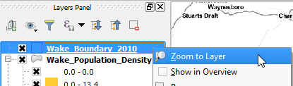

We will use the current map canvas's size and extent to create a georeferenced image. Therefore, the first step will be to set the canvas the way we need it.
For this lesson, we want to focus on the Wake County, so let us zoom to it.

Note: you can also resize the map canvas, by resizing QGIS's lateral panels.